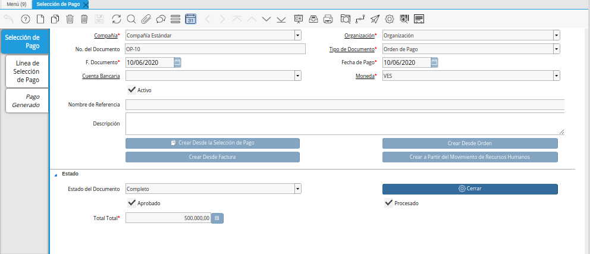
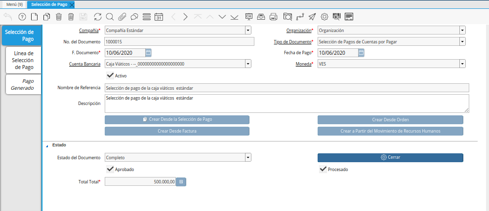
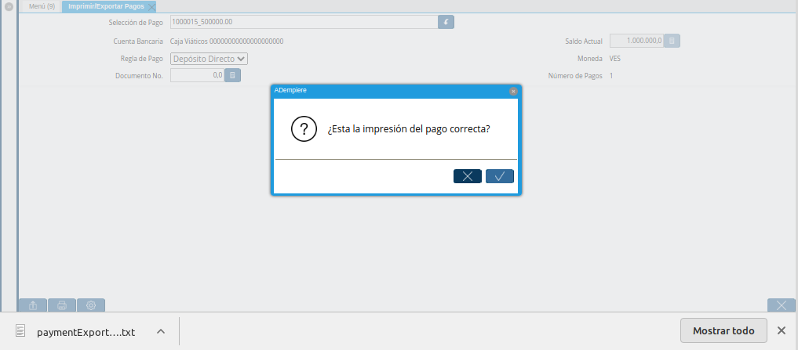
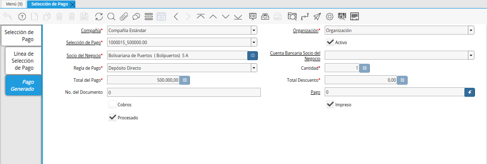
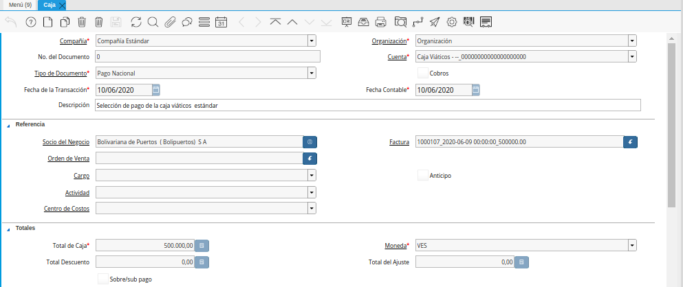
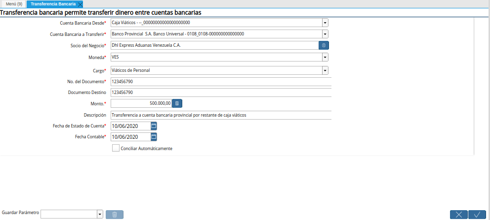
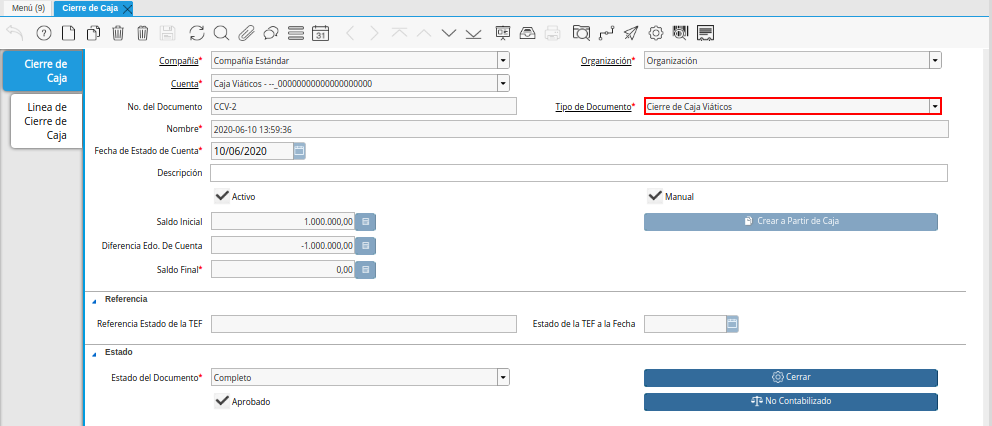

11.7.1. Registro de Caja Viáticos¶
En el registro de caja viáticos de una empresa u organización, se pueden presentar diversos acontecimientos que permiten ejecutar el proceso de diferentes maneras. Siendo una de ellas, el registro de caja viáticos cuando los viáticos son mayor al gasto.
11.7.1.1. Viáticos Mayor al Gasto¶
11.7.1.1.1. Transferencia Bancaria por Viáticos¶
Realice el procedimiento regular para generar una transferencia bancaria, explicado en el documento Registro de Transferencia Bancaria, elaborado por ERPyA.

Imagen 1. Transferencia Bancaria
Note
Al realizar el proceso de transferencia bancaria, es generado un egreso de banco y un ingreso a caja viáticos. De igual manera, es creado un cobro en caja y un pago en pago/cobro.
11.7.1.1.2. Relación de Facturas¶
Realice el procedimiento regular para generar una orden de pago, explicado en el documento Registro desde Factura, elaborado por ERPyA.

Imagen 2. Orden de Pago
Luego realice el procedimiento regular para generar una selección de pago, igualmente explicado en el documento Registro desde Selección de Pago, elaborado por ERPyA.

Imagen 3. Selección de Pago
Por último, realice el procedimiento regular para generar un imprimir/exportar pagos, explicado en el documento Registro de Imprimir / Exportar Pagos, elaborado por ERPyA.

Imagen 4. Imprimir Exportar Pagos
Note
Al realizar el proceso de selección de pago, es generado un egreso de caja viáticos por el monto ingresado en el documento “Selección de Pago”.
Al consultar la pestaña “Pago Generado”, de la ventana “Selección de Pago”, se puede apreciar el registro del pago en la caja viáticos seleccionada en la selección de pago.

Imagen 5. Pestaña Pago Generado
Al consultar el registro creado en caja, se puede apreciar el registro de la selección de pago de la siguiente manera.

Imagen 6. Registo en Caja Viáticos
11.7.1.1.3. Cierre de Caja En Borrador¶
Realice el procedimiento regular para generar un cierre de caja, explicado en el documento Registro de Cierre de Caja, elaborado por ERPyA, seleccionando en el campo “Tipo de Documento” la opción “Cierre de Caja Viáticos”.

Imagen 7. Cierre de Caja Viáticos
Warning
Si el monto total de la transferencia bancaria realizada anteriormente a la caja viáticos del empleado es mayor al monto total gastado por el mismo, es necesario que el cierre de caja se genere en estado “Borrador” y se proceda a realizar una transferencia bancaria por el excedente del monto, antes de realizar el cierre de la caja viáticos del empleado nuevamente.
11.7.1.1.4. Transferencia Bancaria por Excedente¶
Realice el procedimiento regular para generar una transferencia bancaria, explicado en el documento Registro de Transferencia Bancaria, elaborado por ERPyA.

Imagen 8. Transferencia Bancaria
11.7.1.1.5. Completar Cierre de Caja¶
Realice el procedimiento regular para generar un cierre de caja, explicado en el documento Registro de Cierre de Caja, elaborado por ERPyA, seleccionando en el campo “Tipo de Documento” la opción “Cierre de Caja Viáticos”.
Note
Se selecciona el registro de la selección de pago realizada anteriormente con el monto total de la factura. Adicional a ello, se selecciona el registro de la transferencia bancaria realizada desde la cuenta caja viáticos, por el monto restante abierto en dicha caja. Lo anterior, con la finalidad de llevar la cuenta caja viáticos a su monto inicial, para este ejemplo el monto inicial es cero (0).

Imagen 9. Cierre de Caja Viáticos
Note
Al realizar el proceso de transferencia bancaria, es generado un ingreso a banco y un egreso de caja viáticos. De igual manera, es creado un pago en caja y un cobro en pago/cobro.